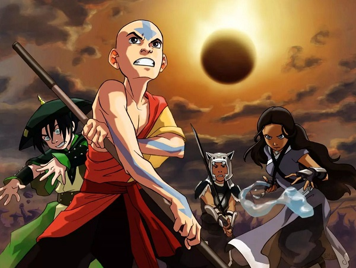
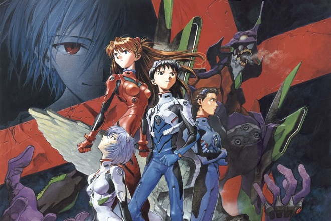

| Foods | Games | Movies |
|---|---|---|
| Pizza | World of Warcraft | Avengers: Infinity War |
| Wings | Magic the Gathering | Avengers: Endgame |
| Lobster | Settlers of Catan | The Matrix |
| Strawberries | Overwatch | Aliens |

| Foods | Games | Movies |
|---|---|---|
| Pizza | World of Warcraft | Avengers: Infinity War |
| Wings | Magic the Gathering | Avengers: Endgame |
| Lobster | Settlers of Catan | The Matrix |
| Strawberries | Overwatch | Aliens |
I really enjoyed Avatar: The Last Airbender when I was young and the show holds up great even today. I was able to share it with my son, Cooper, who also enjoyed it immensely. Some of my other favorite shows include Game of Thrones and Neon Genesis Evangelion.
 I have had the incredible opportunity to travel to some pretty exotic places in my life including Australia, China, Greece, Italy, Costa Rica, just to name a few. These were great life experiences that I think helped me round out the person who I am today. Some day I'd really love to go visit Japan.


How I feel when me and the boys get together..